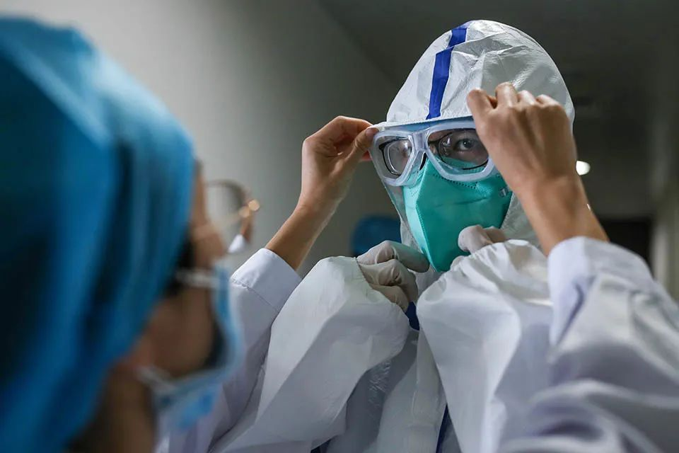
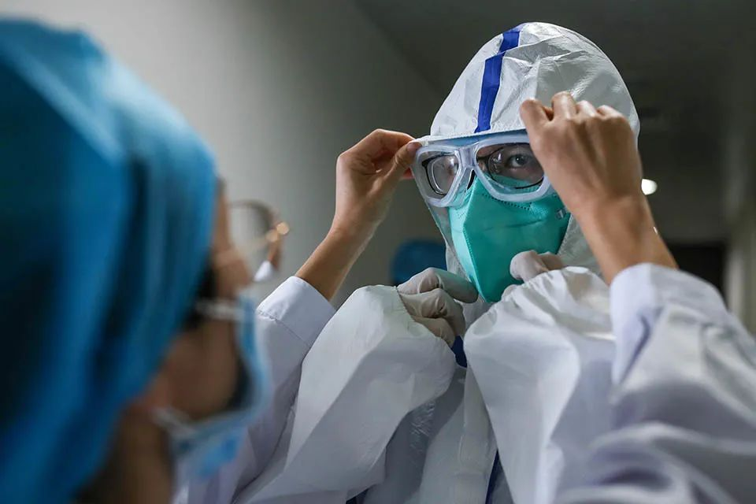
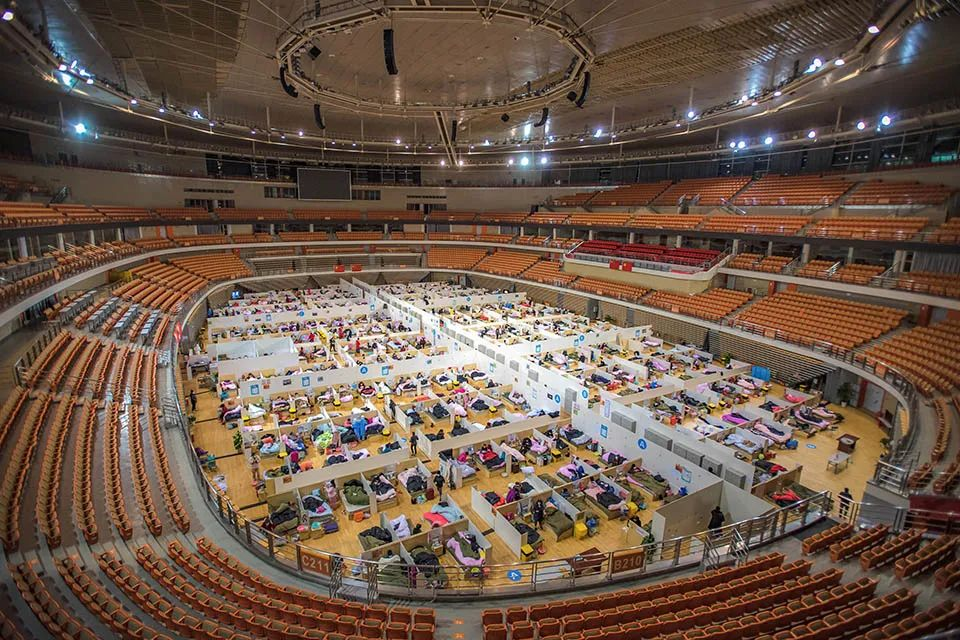

肺炎疫情亟需心理干预：“处理恐慌也是重大任务”
原文链接 备份链接 *▲ *2020年1月24日，在武汉大学中南医院重症隔离病房，医护人员为病人治疗。 （新华社记者 熊琦/图） 全文共*3298*字，阅读大约需要*7*分钟。 有医生刚脱下工作服，巨大的压力让其瞬间变身“小女生”坐在房 …
 *************▲*************2020年2月9日，武汉，一名医护人员正在穿防护服。现阶段，医护人员的心理问题尚未浮现，他们面对的最大问题仍是超负荷工作。（拾城 赖鑫琳/图）
*************▲*************2020年2月9日，武汉，一名医护人员正在穿防护服。现阶段，医护人员的心理问题尚未浮现，他们面对的最大问题仍是超负荷工作。（拾城 赖鑫琳/图）
全文共6395字，阅读大约需要14分钟。
“真正了解的人是不忍心去碰的，就好像刀子刚刚插进去，你是不能断然把刀子马上抽出来的。”
“他们也开始懂得，疾病不应该把人们分开，恰恰相反，它应该为人类相爱提供机会。”
本文首发于南方周末 未经授权 不得转载
文 | 南方周末记者 李慕琰
南方周末实习生 杜嘉禧
责任编辑 | 邢人俨
过去一个月，武汉人的声音夹杂着叹息、消沉、焦虑和恐慌。他们的求助电话打向四面八方。至少十条热线、数千位咨询师为他们提供心理援助。
最多的一天，王静接了37个电话。经验丰富的心理治疗师能从声音中判断对方的内心处境。在一个女孩急切的哭泣中，王静听到对方已在山西老家确诊，而留在武汉的男友发烧39度，仍一次次往返于协和医院与家之间等待检查机会。他们居住的万松园，距离华南海鲜市场并不远，到协和医院也只有半站路。那几天武汉阴雨绵绵，王静听到了那个男孩的焦虑与绝望。
有时，一些声音是麻木的。社区咨询师潘兰接过很多这样的电话，起初很平静，但当咨询师开始说话，他们会急切地打断——“你先听我说”，说着说着就哭了——能够哭出来，在这个特殊的时期已是幸事，“哭是一种释放”。
在一间为火神山施工人员提供服务的酒店里，一位中年女服务员留守下来。她没有回乡和家人团聚，几天后，她发烧咳嗽、头昏无力，成了疑似患者。她排不上核酸检测和床位，独自在出租屋里隔离。夜里，王静接到了她的电话，那是一个“虚弱、孤单、非常绝望”的声音。
王静答应，每天用私人号码打给她，查看她的情况——她称之为“生死约定”。这种一次性的心理援助以十到二十分钟居多，私下联系很罕见。连续通话一周后，对方渐渐退烧、好转，能自己出门买药吃饭了。
武汉人喜欢说“烦死人了”。学者易中天曾写道，这是武汉人的口头禅，不管要表达真正的不满还是高兴的嗔怪，他们总是嘀咕烦。
但在封城的一个多月里，留守的九百万武汉人表现出了极大的克制。生长于此的心理医生卢林说，武汉的市井文化灵活、乐天、包容，虽然大家很愤怒也很哀伤，但仍没有添乱，“我们的人民是非常好的人民”。
一位武汉当地电视台的年轻记者每天都要跑医院，经常处在“崩溃边缘”。他曾看见一位护士因病人没救过来，在病房里放声大哭。“这个城市每天都是生离死别。”他对南方周末记者说。
2006年的一项研究曾指出，SARS期间被隔离者中，29％的人表现出创伤后应激障碍，31％的人有抑郁症状。台湾地区的一项调查则指出，经历SARS后，约9.2％的人对生活持有更悲观的看法，精神病的患病率为11.7％。
作家方方接受中新社采访时说，生活在武汉的人几乎人人心里都有创伤，她自己也打算寻求心理帮助。未来武汉解封时，必定几家欢喜几家愁——人们终于自由了。“但那些病亡家属，必然格外悲伤，灯火万家，独少一人。这种家破人亡的痛感只有自己知道。”
第一位上报疫情的张继先医生哭了无数次，病人死了、物资没了、体力透支了，“把一生的眼泪流光了”。
洪山区心理志愿者鄢群真正体会到这句话的含义，是从身边人离世开始的。她发现中国人惯于逃避生死，大都没有准备。“我想武汉市现在大多数人都体验到了，眼泪都哭干了；没有那么多的眼泪，因为你还要去生活。”
鄢群对南方周末记者描述武汉人的内心创痛：“真正了解的人是不忍心去碰的，就好像刀子刚刚插进去，你是不能断然把刀子马上抽出来的。”

2020年2月17日，武汉体育中心方舱医院。（新华社 肖艺九/图）
1
封城的消息公布时，大多数武汉人还在沉睡。1月23日凌晨四点，电影导演王启明醒得早，他事后记录下当时的感受：身体越来越沉，呼吸变得急促，“心里最后的那道防线完全垮掉了”。他叫醒爱人，对方迷迷糊糊地问：这是你做的梦吗？
肖劲松所在的武汉大学中南医院提早三周就流传开，出现了一种和SARS类似的传染病，甚至更狡猾。肖是神经内科医生，他接到的第一个求助电话来自医院内部同事，对方感染后，感到孤立无援。那时大家都很迷茫，不知道即将面对的是什么，也根本想不到，很快他们将见到几十、上百位医护人员接连感染，“都是我们的同事，一个一个地倒下”。
23岁的女孩张梓铨陪母亲去医院，发热门诊早已人满为患，母亲咳嗽发烧，但不肯做CT检查，坚信自己“不会那么容易中招”。
封城之后不久，父亲也开始咳嗽。张梓铨最好的朋友是定点医院护士，父母也接连感染。这种被包围的感觉，让两个年轻女孩觉得，“每天就在等，等什么时候发作，发作以后是严重还是不严重，你不知道哪一天会死掉”。
她坚决不肯去爷爷家过年，给爷爷打电话：我肯定被感染了，不要传染给你们。母亲怪她，“大过年的，别说这种不吉利的话”。爷爷说：“不要紧的，你别哭。”爷爷跟着哭了起来。
23日当天，湖北省心理咨询师协会开通了最早的免费心理热线。会长肖劲松说，头三天，每天都有一百多个来电，接近六成是不知所措的普通人。“所有外出通道都关闭了，地铁、公交、轮渡都停运了，大家感觉有一种灾难，好像大祸临头，好像生死存亡的时刻到了。”为热线服务的心理咨询师王静说。
有人感到被抛弃，有人打算离婚，有人得了其它病不知该去哪里看，有些重疾病人没有了药。肖劲松的心理病人也面临药物短缺，他建议一位抑郁症患者减半药量，用7天的药撑满14天，不够就再减半，吃28天，“这样你这一个月就可以挺过去”。
社区工作者同样感到恐惧，一位基层人员给潘兰打电话：我其实特别担心，家里有老人小孩，我每天在一线工作，会不会把病毒带回去？
最初那些天，武汉一直阴雨。由于机动车禁行，李想和高烧不退的父亲骑着两辆自行车，从一家医院跑到另一家，穿梭在排队的、哭闹的、喊着“快不行了”的人群里。一个中年女人无法入院，家属甚至带来一张床，搁在缴费台旁边，让她睡下。
卢林原以为封城只会持续七天，到了初六，确诊数字仍在增加。这是武汉人最为艰难的一段时间，最大的无助归根结底还是没有床位。即使是心理热线，接到的大多数求助也是现实诉求。心理师们想尽一切办法，不论公私关系，找寻床位。“这时候一张床就是一条命。”卢林说。
在持续高烧中排了12天，李想的父亲才等到这张床。这期间，父亲独自在卧室隔离，门口摆着一张凳子，饭好了就摆上去，人走开了才拿。但86岁的奶奶不听劝，总是半夜爬起来，去父亲的房间摸他的额头，看他有没有退烧。父亲住进医院的第二天，奶奶也发烧了。
张梦琳整晚整晚睡不着，总是哭。她为母亲找床位，给医院、社区、志愿者打电话，发微博，填报了所有求助登记，得到的结果都是等通知。尽管现在已经恢复了平静，张梦琳对南方周末记者形容当时的感受：“前面没有任何路可以走了，就是一条死路，也没有人可以帮你。”
为了帮一位患者寻找床位，王静打给各级政府，联系了所有渠道，依然解决不了。她相信如果有多余床位，一定会安排，“他们也确实无能为力”。但她不知道该怎么回拨这个电话，她不能面对——“面对一个具体的人，而这个灾难发生他的身上”。
2
即便在武汉，感染者和非感染者也仿佛置身两个世界。母亲高烧、咳血，张梓铨求助无门，同在武汉的大学辅导员打来电话，“难道你们没去定点医院检查？”“定点医院？”她感到不可思议，“你知道多厉害的人才能去吗？”
在一个雨夜，张梓铨的父母再次赶往医院，她看见那两个穿雨衣奔跑的背影，歇斯底里地崩溃了。她哭到嗓子哑，想到了死亡。她打了无数电话求医问诊，一度拨通了心理热线，不过无人接听。
父母赶在零点前回到家，CT结果显示母亲确诊。那一刻，张梓铨竟感觉“放下心来了”——“突然就觉得平静了，真的是平静了”。
未知和不确定几乎把她逼疯，现在好歹确定了。一家人商量，既然已经待在一起那么多天，之后索性不再隔离了，在家不戴口罩，也没有消毒。
医护人员的情绪也陷入了异样的平静。最初，肖劲松每天都会接到四五个医生的求助电话，随着疫情加重，反而变少了。他分析，大家要么处在“应激抵抗期”，来不及收拾情绪；要么就是选择了默默忍受。他给同事们设定“硬杠杆”——当工作效率下降或不能正常生活，一定要给他打电话。当天，这个方法短暂地奏效了，之后又恢复了平静。
王静说，医护人员最大的问题还是累，闷在防护服里一天，有些轮班后躺在地上就睡了，根本没有说话的力气。
一线救援人员常见的情况是出现“替代性创伤”——目击他人遭受苦难，产生共情，把别人的创伤当作自己的创伤。肖劲松在汶川为救灾人员提供过心理辅导，救援时，大家生龙活虎，结束后回到部队，早晨起床号吹响，没人起床，“心理出问题了”。
一位护士经历了父母先后离世。肖劲松形容那种痛苦——“难以言状，就像是眼睁睁看着亲人死在自己怀里的感觉”。
这位护士继续工作，维持在创伤应激反应的“抵抗期”——在这个阶段，交感神经处于兴奋状态，仍然可以全身心投入工作“，被崇高的事业笼罩着，来不及哀伤”。如果进入下一个阶段“衰竭期”，创伤体验就会出现。
肖劲松问她是否愿意回家休息，她说，回家之后，面对那个房子、父母用过的东西，“我能干什么？我还不如上班。我在帮助病人的时候，感觉我在做点什么”。
“哀伤是我们的权利，哀伤是治愈心理创伤的一种情绪宣泄，我们要痛哭，要发泄情绪。”肖劲松说，“一定要学会把人的正常的情感，哪怕我们觉得是负面的情感表达出来，实际上它都是有意义的。”
2月6日晚，李文亮医生抢救、离世的消息传来，肖劲松所在的医生同事群里鸦雀无声，完全“静默了”。由于气氛太过压抑，职工心理指导小组的成员悄悄问他：该怎么办？肖劲松在群里说：让我们哀痛一下，让我们宣泄一下。
沉默是医生的宣泄方式。“想说，但是又怕给李医生添乱。”肖劲松对南方周末记者说，“医护人员就是这样一群人，当受到委屈的时候，大家就这样承受着。我们是医护工作者，你一发牢骚，就会影响一大批人。”
哀痛停留只此一晚，第二天，群里活跃如常，“谈工作、谈一些正能量的事”。
3
寻死的念头会在某些极端的时刻找上门。张梓铨的母亲被确诊后，医院让她回家隔离，“就感觉是让我在家里自生自灭”。母亲连续发烧九天，她不想吃药，说想死，活着没意思。张梓铨没什么反应，父亲也没说话，就像对一切已经习以为常。
2003年SARS期间，台北市和平医院封院后，一名年近五旬的男性患者在病房浴室上吊自杀。“人在过于绝望的情况下，可能会实施自杀，也可能用一种‘及时行乐’‘最后的狂欢’来防御这种绝望感。”心理咨询师于玲娜说。
1月30日下午，感染科主任向肖劲松求助，一位患者喊着要自杀。肖劲松穿上防护服，紧急进入病房。患者很激动，打针的时候一直挣扎，胳膊都肿了。她不知道自己患病，把父母、丈夫、六个月大的孩子全都传染了。她觉得自己是家里的罪人，再没有活下去的意义。
“那个滋味是很难受的，她不用开口，我们都感同身受。”肖劲松说。
她不敢和家人联系，肖劲松就劝她联系亲戚、同学，为她找回情感支持。肖劲松改变她的自责认知，“你不是罪人，你和家人都是受害者。覆巢之下，焉有完卵？是整个鸟巢翻了，我们都是这场大疫的受害者。”
但肖劲松也感叹，被家人怪罪、埋怨的传染者“太多了”。
由此产生的内疚感会让人的心理创伤难以愈合。中国灾害防御协会社会心理服务专委会秘书长祝卓宏在汶川地震后做了三年心理援助，见过一位妻子反复回想，丈夫临行前要搂着她亲一口，她没有同意，丈夫开车进山，被大石头砸中死了。她长久惦记那个未能答应的亲吻，“有内疚，就有自责，甚至会自伤、自杀”。
地震是突如其来的天灾，疾病则缓缓侵蚀人体，一旦有亲人确诊，家属可能陷入纠结，想靠近又不敢靠近。于玲娜告诉南方周末记者：“这种痛苦可能是公共性、传染性疾病特有的心理创伤，可能是挺复杂的创伤。”
一间方舱医院的主任告诉肖劲松：“我们70%的工作都在处理心理问题。”
在另一家定点医院里，有位老人坚持要出院，拒不配合，撕烂了护士的防护服，警察也赶来了。一位医生上前安抚，聊天之后才得知，老人有老年痴呆的前期症状，认知功能已经退化。相处一段时间后，老人和护士们熟起来，逐渐有了安全感。
这位医生问肖劲松，“我们这样处理适合吗？”肖劲松告诉他：病人反应好，就是适合的。
潘兰接到来自疾控中心的求援，单独隔离病房的患者怒吼、哭泣，喊着“不想活了”。尽管医院里发放了应对心理问题的小册子，但紧急情况下派不上用场，“你想一个处于情绪波动的人会去看吗？”
潘兰教医生牵着患者的手，对他说：我们再挺一挺就过去了。“把他们当作一个正常人，别把他们当作病人。”潘兰说，“这句话，比任何方法技巧都有作用。”
4
疫情之下，生死忽然变得稀松平常。一位律师失去了七十多岁的父亲，生前，父亲被救护车拉着辗转多家医院，都没有床位，到一处检查、打针，两天后又被拉去另一处、再打一针。“人的尊严荡然无存，能够被接过去打一针，已经是感恩戴德了。”他在与王静的通话里哭得很伤心。
在这个特殊时期，尸体不能在殡仪馆停放，当场就得火化。王静说，这会给家人留下创伤，需要“完形治疗”——等疫情过去，她建议律师带着父亲的骨灰，回老家办一场体面的葬礼，“给他一个满意的结局，否则永远也过不去”。
传统文化中的丧葬仪式原本是很好的心理疗愈。“没有追悼会、没有很好的临终关怀，就会很难疗愈失去亲人的心理创伤。”祝卓宏对南方周末记者说，“死亡一个人，周围的直系亲属可能得达到6-8个，最痛苦的就是这部分人，他们可能会出现严重的创伤性哀伤，创伤后的抑郁以及自杀风险还是存在的。”
潘兰的一位朋友向她求助——六十多岁的父亲感染了，在医院上了呼吸机。潘兰为她纾解情绪。三天后她再打过去，对方说，父亲已经走了，上次通完话，次日夜里没挺过去。
“爸爸走的时候，我连摸都不能摸他。我唯一能做的就是跪在地上不停地磕头。”挂掉这个电话，潘兰痛哭了一场。
一对年轻夫妻育有十岁的龙凤胎，丈夫感染新冠肺炎，突然去世。妻子把自己关起来，闭门不出，不接任何亲友的电话。社区妇联主任找到鄢群，向她求助。鄢群回答：她现在的自闭就是对自己最好的保护，把菜送好、孩子看好，“让她在自己的世界里待一段时间吧”。
卢林在汶川见到很多人，事发一个月后创伤才开始浮现。有人离开了四川，外出流浪；有人看透了生死，再难获得安全感。
某种程度上，张梓铨是幸运的，母亲渐渐退烧，精神也好起来了，社区安排她去酒店隔离。但这个女孩身上的一些东西已经永远被改变了——她发现过去所知的常识全都失效了，“原来你之前的生活是那么脆弱”。
最初的几天，她还盘算着封城结束之后可以去喜欢的电视台实习，“还在想‘前途’这种很高等的需求”。现在，这个爱打扮、爱吃喝玩乐的女孩每天躺着，不洗头、不洗澡，父亲做点饭，她就吃一点。张梓铨觉得自己已经不是“正常人”。
托尔斯泰的一句话也许可作为参照，“把死置诸脑后的生活，和时时刻刻都意识到人在一步步走向死亡的生活，是两种截然不同的状态。”
因为在网上求援，有记者采访张梓铨，问她是否需要帮助。她回答：希望你们多关心那些更底层的人——“不会上网、没有关系、无车无房无亲戚无任何保证的人，他们怎么办呢？”
每当张梓铨在微博上表达武汉人的痛苦，就有人来和她辩论，指责她传播恐慌。“好像打破了谁的美梦一样。我不说的话，那些人不就白死了吗？”她对南方周末记者说，“他们好像不是一个病人，也不是一个人，他们就是恐慌的源头。”
“他们都是我每天擦肩而过的人，一起排队买奶茶的人，买菜闲拌两句嘴的人，现在，我们、他们，都成了‘灾民’，甚至成了‘死者’，成了追着殡仪车哭嚎叫喊的人，我如何去接受？”张梓铨说。
2月15日，武汉下了一场大雪，雪花覆盖在空荡荡的街道与很久无人开动的汽车上。往常这样的时候，鄢群会很高兴，因为可以去梅园赏雪了。这一天她待在家里接求助热线，担忧着外头值守的警察、工作人员，太冷了，“千万不能感冒啊”。
张梦琳平复了下来，母亲终于住院了。她祈求命运的方式是“行善积德”，很多志愿者给她送了药，她打算等14天隔离结束，就去报名给老人送菜。
“他们开始懂得，死亡时刻威胁着每个人……”托尔斯泰写道，“他们也开始懂得，疾病不应该把人们分开，恰恰相反，它应该为人类相爱提供机会。”
王静总是描述武汉有多美，来宽慰热线咨询者。她邀请外地人在疫情结束后来看武大的樱花。她对武汉人会说：让我们春暖花开时，相约在东湖绿道，相约在黄鹤楼。
所有心理援助者都清楚，疫情终会结束，但武汉人内心的安宁不知何时到来。
戳击下面图片 继续阅读专题


原文链接 备份链接 *▲ *2020年1月24日，在武汉大学中南医院重症隔离病房，医护人员为病人治疗。 （新华社记者 熊琦/图） 全文共*3298*字，阅读大约需要*7*分钟。 有医生刚脱下工作服，巨大的压力让其瞬间变身“小女生”坐在房 …
原文链接 备份链接 金才玉（中）等护工前往街道求助，希望安排收治。 本文约3393字 预计阅读时间9分钟 作者 | 中青报·中青网记者 王林 编辑 | 张国 武汉1月23日宣布封城之后，900万人留守，正在武汉市中心医院照顾病人的6位护 …
原文链接 备份链接 *************▲*************2月19日，武昌医院的发热门诊就诊的人数明显减少。（南方周末记者 王伟凯/图） 全文共5257字，阅读大约需要10分钟。 因为诊断门槛过高，过去二十多天里，武汉 …
原文链接 备份链接 *************▲*************2月9日，医护人员在雷神山医院了解新冠肺炎患者病情。（新华社 高翔/图） 全文共4438字，阅读大约需要10分钟。 只要有病人，就有工作，一旦丢失了客源，也就失 …
原文链接 备份链接 *************▲************* （武汉红十字会官网截图/图） 全文共*3412*字，阅读大约需要7分钟。 “在物资发放这块，不会说我们想给谁就给谁，所有的分配由卫健委和防控指挥部来决定。” …